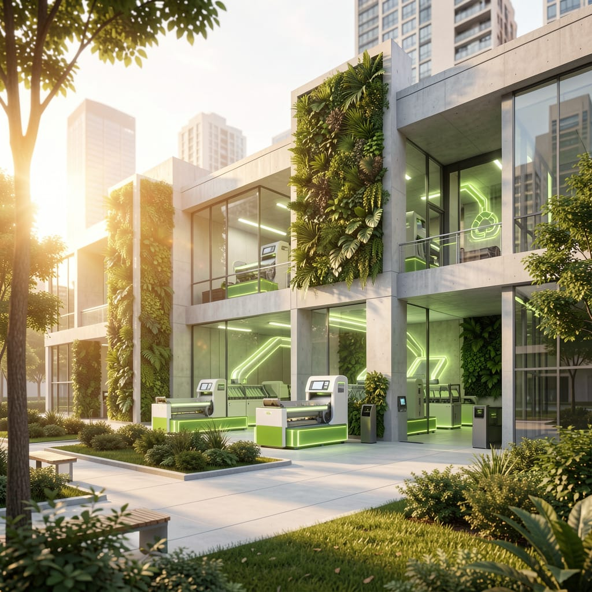
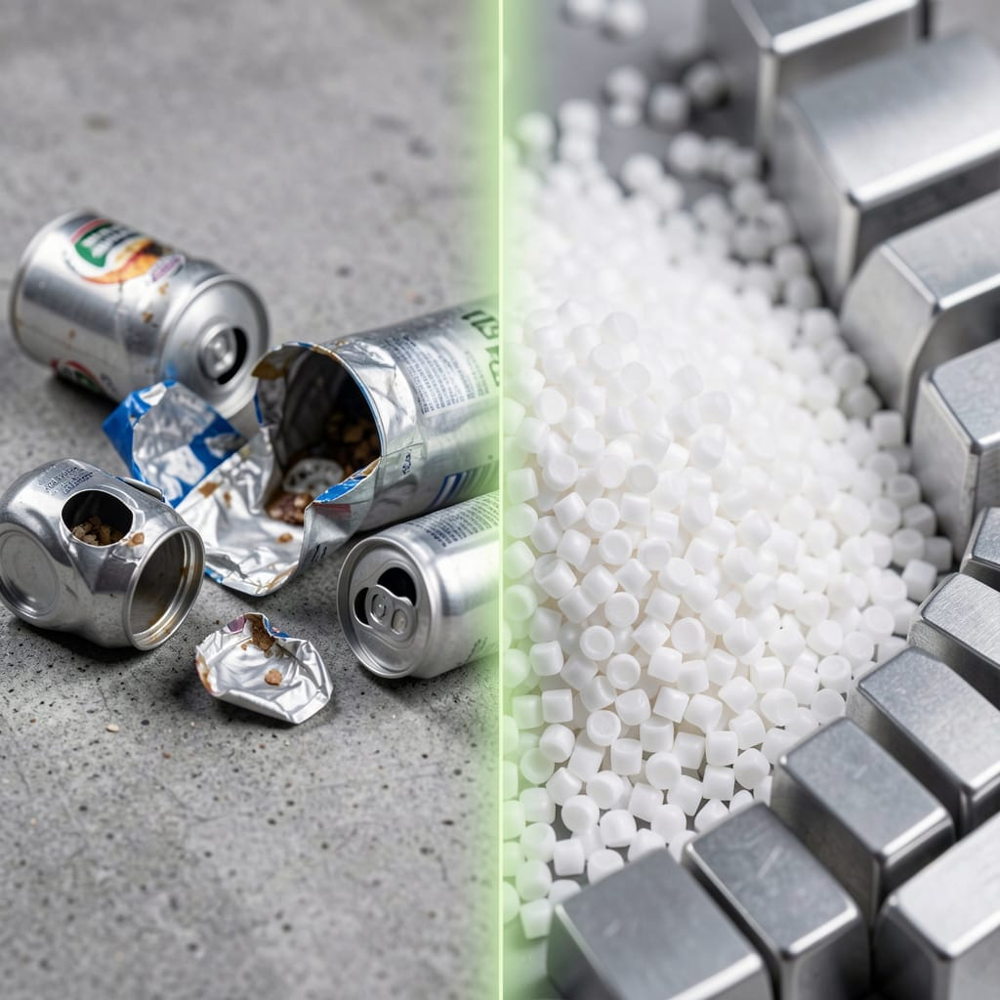
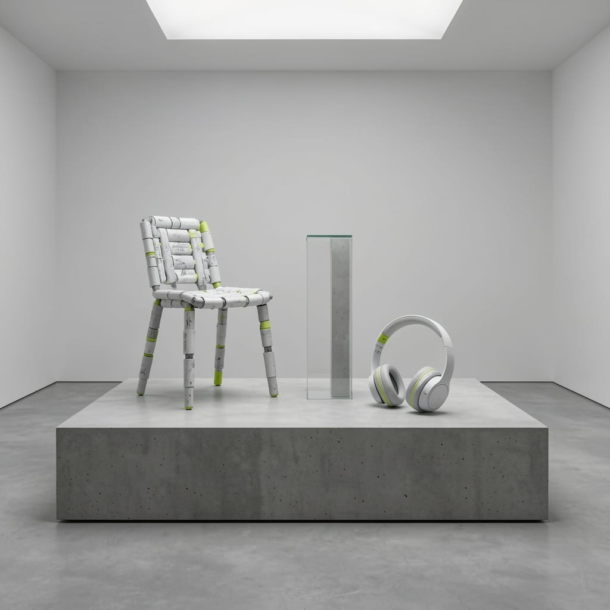
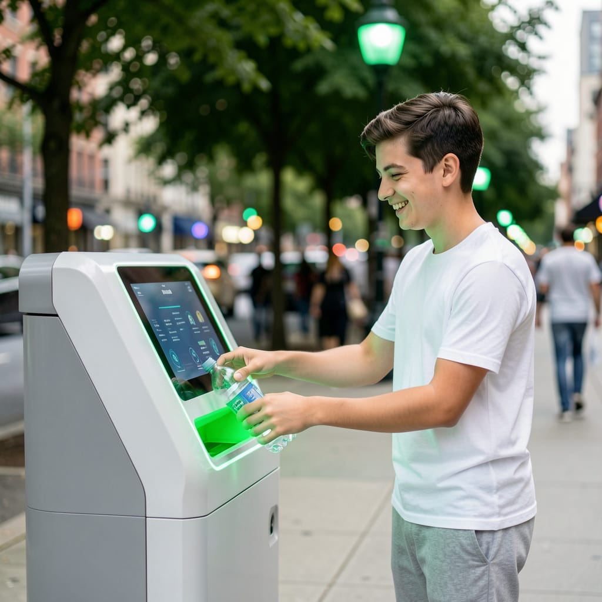
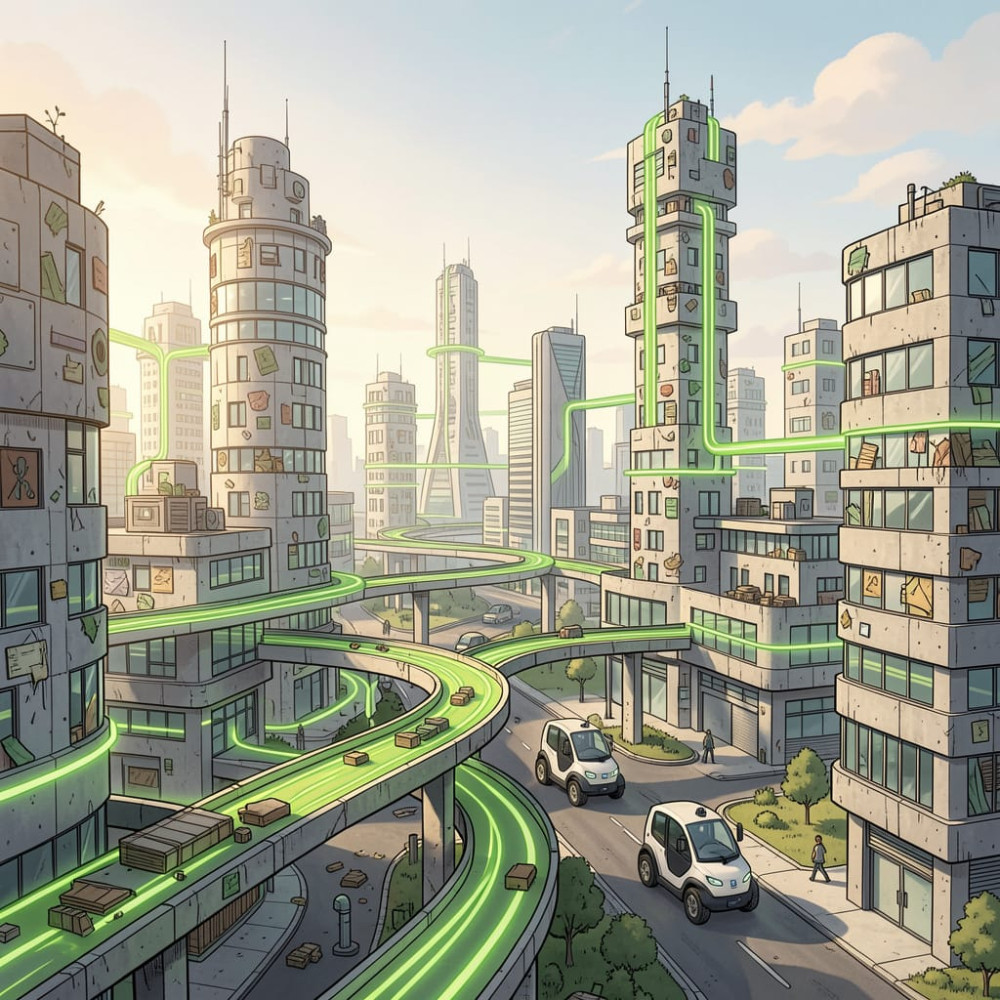

Transforma tus residuos.
Transforma tu ciudad.
Conecta con los puntos de reciclaje más cercanos y aprende a clasificar en segundos. Hacer tu parte por un entorno urbano limpio y sostenible nunca fue tan simple.

El Proceso: De Residuo a Recurso
Nuestra planta de clasificación inteligente separa y procesa los materiales de manera eficiente, preparando cada elemento para su segunda vida en la industria. Este es el corazón de la Metamorfosis Urbana.

Mapa de Puntos Limpios
Encuentra el lugar ideal para cada material.
Guía de Clasificación
Conoce qué y cómo separar, rápido y fácil.
Papel y Cartón
Cajas, hojas, envases de papel.
Ver tipsVidrios
Botellas y frascos limpios y secos.
Ver tipsPlásticos
Envases PET, tapitas, bolsas.
Ver tipsPeligrosos
Pilas, baterías y electrónicos.
Ver tipsEl Resultado Final
Comprueba cómo el diseño de alta fidelidad se fusiona con la sostenibilidad. Sillas, auriculares y productos cotidianos nacen del reciclaje urbano, creados íntegramente de nuestros propios residuos locales demostrando una utilidad y estética inigualables.

Impacto Ciudadano
El diseño y la tecnología construyen la plataforma, pero la comunidad hace el cambio. Deposita tus envases en nuestros contenedores inteligentes repartidos por la ciudad y súmate al movimiento.
Sumarme al Impacto
Visión a Largo Plazo: La Ciudad Circular
Un vistazo a nuestro futuro: ciudades hiperconectadas donde los materiales fluyen en corredores verdes y nuestra arquitectura está viva gracias a Metamorfosis Urbana.

Himno: Metamorfosis Urbana
La banda sonora de nuestra transformación.
"Separar hoy es elegir un mejor mañana"
IA Lab: Documentación del Proyecto
Esta plataforma ha implementado tecnologías de Inteligencia Artificial como un catalizador del diseño. Explora las instrucciones (prompts) que le dieron vida y cuerpo a 'Metamorfosis Urbana'.
Generación de Textos e Ideas
Consulta los prompts base para la arquitectura web, copies, redes y documentación, utilizados en las fases tempranas del IA Lab.
1. Arquitectura de Información
"Actúa como un Arquitecto de Información Senior especializado en plataformas de sostenibilidad. Diseña la estructura y el mapa de sitio (Sitemap) para una web de 'Reciclaje Urbano'. La navegación debe ser intuitiva y educativa. Define las secciones clave: Inicio (con impacto visual), 'Mapa de Puntos Limpios', 'Guía de Clasificación', 'IA Lab' (Documentación) y 'Comunidad'. Explica la jerarquía de contenidos para que un ciudadano promedio encuentre dónde reciclar en menos de 3 clics."
Propuse una estructura plana (Flat Architecture) donde la funcionalidad principal está a un clic desde el inicio. Niveles base: Home, Mapa interactivo, Guía visual rápida, Comunidad e IA Lab para transparencia y metodología.
2. Diseño Visual y Experiencia
"Actúa como un Diseñador UI/UX con enfoque en Diseño Biofílico y Minimalismo Urbano. Define el sistema de diseño para la web de Reciclaje Urbano. Proporciona una paleta de colores que combine tonos orgánicos (verdes y tierras) con tonos industriales modernos (grises de concreto o azules acero). Sugiere tipografías legibles y elementos de interfaz (iconografía de residuos, tarjetas de información) que transmitan limpieza, orden y modernidad tecnológica."
Sistema implementado con paleta principal: Verde Salvia Claro (#6B9071) y Gris Concreto (#8D99AE). Tipografías: Outfit para encabezados e Inter para lectura profunda. Elementos diseñados con glassmorphism sutil para sensación de frescura.
3. Redacción y Mensaje
"Actúa como un Copywriter especializado en comunicación ambiental. Escribe los textos principales para la landing page. El tono debe ser motivador, directo y libre de culpas, enfocándose en la 'Transformación Urbana'. Crea un H1 (título principal) potente, una breve explicación de la misión del sitio y 3 micro-copys para botones de acción (CTAs) que inviten a la participación activa en el reciclaje local."
El enfoque fue 'Transformación Urbana' libre de culpas. H1: "Transforma tus residuos. Transforma tu ciudad." CTAs generados: "Ubicar Puntos Limpios", "Aprender a Clasificar" y "Sumarme al Impacto".
4. Estrategia de Redes
"Actúa como un Social Media Manager para una iniciativa de Eco-Urbanismo. Diseña una campaña de 4 publicaciones para el lanzamiento de la web. Post 1: El problema de los residuos en nuestra ciudad (Conciencia). Post 2: Presentación de la herramienta interactiva de la web (Utilidad). Post 3: Detrás de escena: Cómo usamos IA para mejorar el reciclaje (Innovación). Post 4: Llamado a la acción para unirse a la comunidad (Engagement). Incluye ganchos visuales (Hooks) y una lista de hashtags."
Se diseñó una estrategia Multi-Fase: Post 1 (Problema de residuos y solución local), Post 2 (Herramienta interactiva de ubicación en 3 clics), Post 3 (Uso de IA y diseño biófilo) y Post 4 (Llamado a la comunidad).
5. Documentación y Sinergia
"Actúa como un Documentador de Proyectos Tecnológicos. Escribe una introducción profesional para la sección 'IA Lab' de la web. El texto debe explicar que este sitio no es solo una herramienta de reciclaje, sino el resultado de un proyecto final de investigación explorando la sinergia entre creatividad humana e IA."
Se desarrolló una introducción reflexiva resaltando a la IA como catalizador que asiste la empatía del diseño humano para lograr un impacto sociourbano masivo.
Catálogo Visual e Identidad
A continuación se muestran los Prompts de Texto que resultaron en las imágenes que componen cada sección de esta página web, y el diseño del marco base de 'Metamorfosis Urbana'.
1. Sección: HERO (La Portada)
"A wide-angle, cinematic photograph of a clean, state-of-the-art urban recycling facility fully integrated into a modern city park. The building is made of concrete and polished glass, featuring massive vertical gardens. Smart sorting machines inside emit a subtle, neon lime-green glow. The atmosphere is bright under warm, golden hour sunlight, emphasizing a perfect harmony between technology and nature. White and light gray color palette with striking green accents, 8k resolution."
2. Sección: PROCESO (Cómo funciona)
"A creative, high-definition macro close-up split composition. On the left side, raw, crushed aluminum cans and plastic bottles lie on textured, raw gray concrete. On the right side, pristine, uniform plastic pellets and clean metal ingots are perfectly organized. A clean, subtle lime-green glowing line separates the raw from the processed materials. Studio lighting, sharp focus, 4k resolution."
3. Sección: IMPACTO CIUDADANO (La Gente)
"A candid, cheerful candid shot of a young person in modern, casual clothing (white and gray colors) interacting with a high-tech, digital smart-recycling bin on a bustling city sidewalk. The person is smiling as they place a bottle into the glowing green slot. The bin features an intuitive digital screen. The background city is blurred (bokeh) with green streetlights and lush trees. Crisp, clean, daylight photography."
4. Sección: PRODUCTOS (El resultado final)
"A sleek, minimalist display of high-design, industrial products (like a contemporary chair or minimalist headphones) made entirely from recycled urban materials. The items are light gray and white with subtle lime-green details. They are arranged perfectly on a polished concrete pedestal inside a gallery-like space. Diffused, soft white lighting from above, extremely sharp detail, showing the unique recycled texture."
5. Sección: FUTURO (Visión a largo plazo)
"A conceptual, optimistic illustration of a thriving circular city. The urban landscape features futuristic buildings made of recycled components, integrated green aerial pathways, and small, autonomous electric vehicles transporting materials. Clean, graphic-novel style with a primary palette of cool gray concrete and vibrant lime-green energy lines. Wide shot, soft morning light, cinematic atmosphere."
6. Identidad Musical y Diseño del Sistema
"Create a comprehensive design system identity for an urban recycling portfolio named 'Metamorfosis Urbana'. The aesthetic must bridge raw city industrialism with clean, futuristic technology."
Sección de Audio
Prompt: Style: Acoustic Pop Rock, Upbeat, Organic Instrumentation, Strummed Acoustic Guitar, Clean Electric Guitar Melodies, Mid-tempo 4/4, Warm Male Vocals, Positive, Inspiring, Anthemic, Soft Percussion.
Lyrics:
[Intro: Acoustic guitar strumming with clean electric lead]
[Verse 1]
Vivimos en ciudades que generan toneladas de residuos
Todos los días
El reciclaje urbano es una acción simple que tiene
Un impacto enorme en nuestro entorno
[Pre-Chorus]
Cuando separamos los residuos reducimos la contaminación
Cuidamos los recursos naturales y mejoramos la calidad
De vida en nuestras ciudades
[Chorus]
Porque separar hoy es elegir un mejor mañana
El cambio empieza en casa
Pero se logra en comunidad
[Guitar Solo: Melodic and bright electric guitar]
[Outro]
[Final acoustic chord]